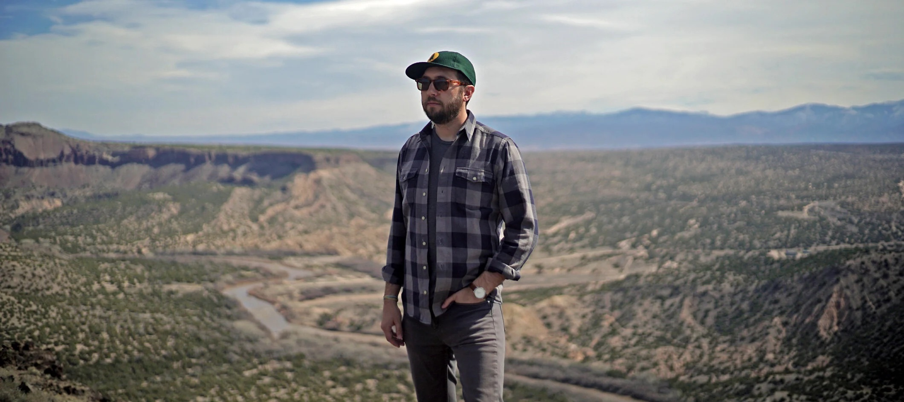

Lance
Edmands
Writer · Director · Editor
Lance is a writer, director, and editor from Brooklyn. He was born and raised on the coast of Maine and graduated from NYU Tisch School of the Arts. His work has been featured at the Sundance, Tribeca, SXSW, Cannes, Berlin, and New York Film Festivals.
His first feature as writer/director, Bluebird, was invited to the Sundance Institute Screenwriters and Directors Labs and was awarded grants from Cinereach, the Richard Vague/Chris Columbus Production Fund, and the San Francisco Film Society. Starring John Slattery, Amy Morton, Adam Driver, Emily Meade, and Louisa Krause, Bluebird premiered at the Tribeca Film Festival and was released theatrically by Factory 25. Salon called the film "a delicate and affecting drama with grace notes of mystery and redemption" and it was named a NY Times "Critics Pick."
Lance also directs and edits commercials, including acclaimed spots for Ford, Google, and Cadillac. His short films, Whiteout and The Seeker, both premiered at the Tribeca Film Festival, had international festival runs, and received distribution. The Seeker won several awards including the Audience Award at the Nashville Film Festival and was nominated for Best Short Documentary of the Year by Vimeo.
In 2023, Lance directed a 30 for 30 for ESPN Films about Louis Sockalexis, the first Native American to play Major League Baseball. Lance also edited the feature film Sanctuary, starring Margaret Qualley and Chris Abbott, as well as the second season of The Jinx for HBO Max, for which he was Emmy-nominated. His most recent film as an editor, Victorian Psycho starring Maika Monroe, will premiere at Cannes.